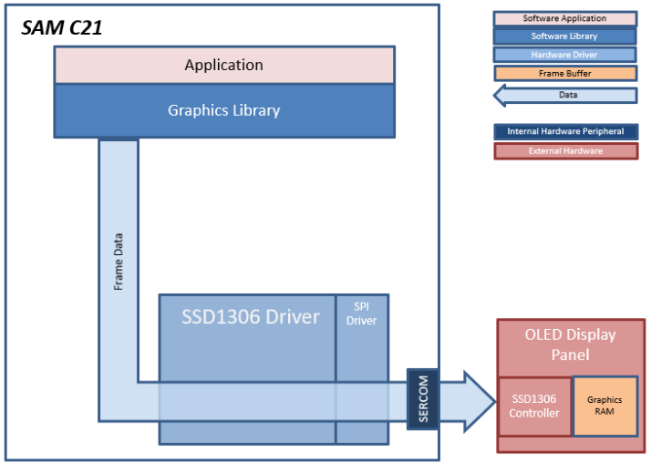
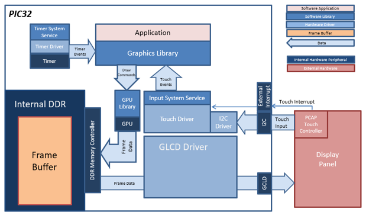
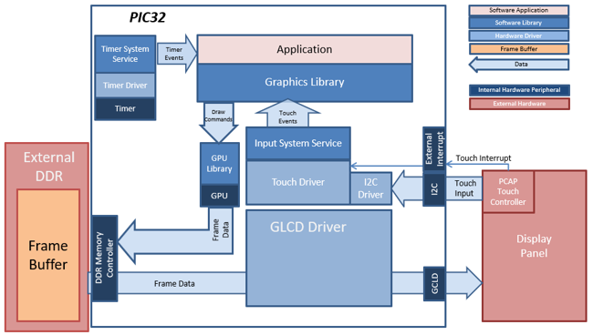
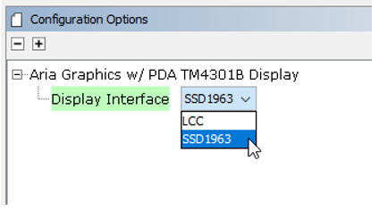
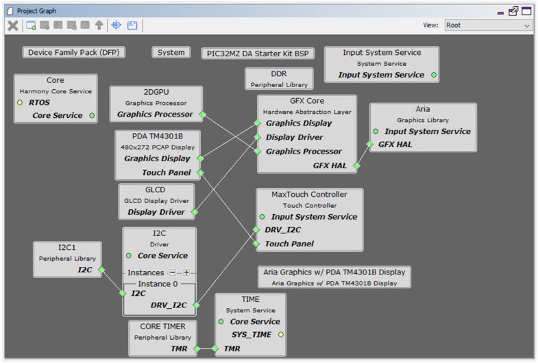

This demonstration serves as a preconfigured starting point for a touch-enabled application powered by the Aria User Interface Library. The design contains an image widget, a label widget and a button widget. To create this project from scratch, see MPLAB Harmony Graphics Library Help > Quick Start Guides > Creating New Graphics Applications.
aria_qs_e70_xu_tm4301b
In this configuration, a 16-bit RGB565 frame buffer is stored in the internal SRAM. These configurations use the Low Cost Controller-less (LCC) display driver to manage the DMA that transfers the framebuffer contents to the display.
User touch input on the display panel is received thru the PCAP capacitive touch controller, which sends a notification to the Touch Input Driver. The Touch Input Driver reads the touch information over I2C and sends the touch event to the Graphics Library thru the Input System Service.

- Input system service and driver
- Time system service, timer-counter peripheral library and driver
- DMA System Service
- Low-Cost Controllerless (LCC) graphics driver
- I2C driver
- 16-bit RGB565 color depth support (65535 unique colors)
- JPEG image stored in internal flash
aria_quickstart_e70_xult_xpro_spi
This aria_quickstart project uses a maXTouch Xplained Pro display panel that is connected to the E70 Xplained Ultra board. The display panel has an ILI9488 display controller that communicates to the E70 using the SPI peripheral. The ILI9488 contains a graphics memory (GRAM) that is used as frame buffer and the Aria graphics library uses the ILI9488 SPI driver to write pixel data to the ILI9488 GRAM. The maXTouch Xplained Pro board has a touch controller, but that is not supported in this project.

• ILI9488 SPI display driver
• 16-bit RGB565 color depth support
• JPEG image support
• SPI driver
aria_quickstart_c21_xpld_oled1
This aria_quickstart project uses an OLED1 Xplained Pro display panel that is connected to the C21 Xplained board. The display panel has an SSD1306 display controller that communicates to the C21 using the SPI peripheral. The SSD1306 contains a frame buffer and the Aria graphics library uses the SSD1306 driver to write pixel data to the SSD1306 frame buffer.

• SSD1306 SPI display driver
• OLED 1-bit per pixel color depth support
• SPI driver
aria_quickstart_C21_xult_xpro_spi
This aria_quickstart project uses a maXTouch Xplained Pro display panel that is connected to the C21 Xplained board. The display panel has an ILI9488 display controller that communicates to the C21 using the SPI peripheral. The ILI9488 contains a graphics memory (GRAM) that is used as frame buffer and the Aria graphics library uses the ILI9488 SPI driver to write pixel data to the ILI9488 GRAM. The maXTouch Xplained Pro board has a touch controller, but that is not supported in this project.

• ILI9488 SPI display driver
• 16-bit RGB565 color depth support
• JPEG image support
• SPI driver
aria_quickstart_e54_xpld_oled1
This aria_quickstart project uses an OLED1 Xplained Pro display panel that is connected to the E54 Xplained board. The display panel has an SSD1306 display controller that communicates to the E54 using the SPI peripheral. The SSD1306 contains a frame buffer and the Aria graphics library uses the SSD1306 driver to write pixel data to the SSD1306 frame buffer.

aria_quickstart_e54_xult_xpro_spi
This aria_quickstart project uses a maXTouch Xplained Pro display panel that is connected to the E54 Xplained board. The display panel has an ILI9488 display controller that communicates to the E54 using the SPI peripheral. The ILI9488 contains a graphics memory (GRAM) that is used as frame buffer and the Aria graphics library uses the ILI9488 SPI driver to write pixel data to the ILI9488 GRAM. The maXTouch Xplained Pro board has a touch controller, but that is not supported in this project.

• ILI9488 SPI display driver
• 16-bit RGB565 color depth support
• JPEG image support
• SPI driver
aria_quickstart_e70_xult_wqvga_ssd1963
This aria_quickstart configuration runs the Aria Graphics Library on the SAM E70 Xplained Ultra board with an external SSD1963 display controller driving a WQVGA display.
In this configuration, the SSD1963 display controller is used to send the display data and timing to a WQVGA display. The SSD1963 is connected to the SAM E70 thru the SMC peripheral and GPIOs which are used to send 16-bit parallel data/commands and to bit-bang control signals to the SSD1963 controller, respectively. The frame buffer is stored externally in the SSD1963 controller.

• Aria Graphics Library
• Input system service and touch driver
• Time system service, timer-counter peripheral library and driver
• SSD1963 display controller driver
• SMC peripheral library and driver
• I2C driver
• 16-bit RGB565 color depth support (65535 unique colors)
• JPEG image stored in internal flash
aria_quickstart_e70_xult_wqvga_freertos
This aria_quickstart configuration runs the Aria Graphics Library in a FreeRTOS environment. The Aria Graphics Library runs as stand-alone task, fully-blocking and waiting for events from external tasks like system service task or the application task. Thread-safe APIs for sending events to the Aria task are provided by the Aria RTOS extension library.
In this configuration, a 16-bit RGB565 frame buffer is stored in the internal SRAM. These configurations use the Low Cost Controller-less (LCC) display driver to manage the DMA that transfers the framebuffer contents to the display.
User touch input on the display panel is received thru the PCAP capacitive touch controller, which sends a notification to the Touch Input Driver. The Touch Input Driver reads the touch information over I2C and sends the touch event to the Graphics Library thru the Input System Service.

• FreeRTOS and Aria Graphics Library RTOS extensions
• Input system service and touch driver
• Time system service, timer-counter peripheral library and driver
• DMA System Service
• Low-Cost Controllerless (LCC) graphics driver
• I2C driver
• 16-bit RGB565 color depth support (65535 unique colors)
• JPEG image stored in internal flash
aria_qs_a5d2_xu_tm4301b
In this configuration, the Aria Graphics library renders the frame to a 32-bit frame buffer in external DDR. The LCDC display controller on the A5D2 is used to drive frame data from DDR to the display. 32-bit RGBA8888 frame buffer is stored in external DDR memory.
User touch input on the display panel is received thru the PCAP capacitive touch controller, which sends a notification to the Touch Input Driver. The Touch Input Driver reads the touch information over I2C and sends the touch event to the Graphics Library thru the Input System Service.

• Input system service and driver
• Time system service, timer-counter peripheral library and driver
• LCDC peripheral and driver
• I2C driver
• 32-bit RGBA8888 color depth support
• RAW RLE image stored in internal flash
aria_qs_a5d2_xu_tm4301b
This aria_quickstart configuration runs the Aria Graphics Library in a FreeRTOS environment. The Aria Graphics Library runs as stand-alone task, fully-blocking and waiting for events from external tasks like system service task or the application task. Thread-safe APIs for sending events to the Aria task are provided by the Aria RTOS extension library.
In this configuration, the Aria Graphics library renders the frame to a 32-bit frame buffer in external DDR. The LCDC display controller on the A5D2 is used to drive frame data from DDR to the display. 16-bit RGB565 frame buffer is stored in the internal SRAM.
User touch input on the display panel is received thru the PCAP capacitive touch controller, which sends a notification to the Touch Input Driver. The Touch Input Driver reads the touch information over I2C and sends the touch events to the Aria Graphics Library Task thru the Input System Service Task.

Demonstration Features
• Aria RTOS extensions, FreeRTOS
• LCDC peripheral and driver, external DDR frame buffer
• Touch input driver, Input System Service
• 32-bit RGBA8888 color depth support
• Button, Label and Image widgets
• WVGA 800x480 display resolution
aria_quickstart_e54_cult_wqvga_ssd1963
This aria_quickstart configuration runs the Aria Graphics Library on the SAM E54 Curiosity Ultra board with an external SSD1963 display controller driving a WQVGA.
The SSD1963 display controller is used to send the display data and timing to a display. The SSD1963 is connected to the SAM E54 thru the PORT peripheral and GPIOs which are used to send 16-bit parallel data/commands and to bit-bang control signals to the SSD1963 controller, respectively. The frame buffer is stored externally in the SSD1963 controller.
User touch input on the display panel is received thru the PCAP capacitive touch controller, which sends a notification to the Touch Input Driver. The Touch Input Driver reads the touch information over I2C and sends the touch event to the Graphics Library thru the Input System Service.

Demonstration Features
• Input system service and touch driver
• Time system service, timer-counter peripheral library and driver
• SSD1963 display controller driver
• PORT/GPIO peripheral library and driver
• I2C driver
• 16-bit RGB565 color depth support (65535 unique colors)
• JPEG image stored in internal flash
aria_quickstart_e54_cult_wvga_ssd1963_freertos
This aria_quickstart configuration runs the Aria Graphics Library on the SAM E54 Curiosity Ultra board with an external SSD1963 display controller driving a WVGA display running with FreeRTOS. The Aria Graphics Library runs as stand-alone task, fully-blocking and waiting for events from external tasks like system service task or the application task. Thread-safe APIs for sending events to the Aria task are provided by the Aria RTOS extension library
The SSD1963 display controller is used to send the display data and timing to a display. The SSD1963 is connected to the SAM E54 thru the PORT peripheral and GPIOs which are used to send 16-bit parallel data/commands and to bit-bang control signals to the SSD1963 controller, respectively. The frame buffer is stored externally in the SSD1963 controller.
User touch input on the display panel is received thru the PCAP capacitive touch controller, which sends a notification to the Touch Input Driver. The Touch Input Driver reads the touch information over I2C and sends the touch event to the Graphics Library thru the Input System Service.
Demonstration Features
• FreeRTOS and Aria Graphics Library with RTOS extensions
• Input system service and touch driver
• Time system service, timer-counter peripheral library and driver
• SSD1963 display controller driver
• PORT/GPIO peripheral library and driver
• I2C driver
• 16-bit RGB565 color depth support (65535 unique colors)
• JPEG image stored in internal flash
aria_quickstart_e70_xult_wvga_ssd1963_freertos
This aria_quickstart configuration runs the Aria Graphics Library on the SAM E70 Xplained Ultra board with an external SSD1963 display controller driving a WVGA display running with FreeRTOS. The Aria Graphics Library runs as stand-alone task, fully-blocking and waiting for events from external tasks like system service task or the application task. Thread-safe APIs for sending events to the Aria task are provided by the Aria RTOS extension library
The SSD1963 display controller is used to send the display data and timing to a display. The SSD1963 is connected to the SAM E70 thru the SMC peripheral and GPIOs which are used to send 16-bit parallel data/commands and to bit-bang control signals to the SSD1963 controller, respectively. The frame buffer is stored externally in the SSD1963 controller.
User touch input on the display panel is received thru the PCAP capacitive touch controller, which sends a notification to the Touch Input Driver. The Touch Input Driver reads the touch information over I2C and sends the touch event to the Graphics Library thru the Input System Service.

Demonstration Features
- FreeRTOS and Aria Graphics Library with RTOS extensions
- Input system service and touch driver
- Time system service, timer-counter peripheral library and driver
- SSD1963 display controller driver
- SMC peripheral library and driver
- I2C driver
- 16-bit RGB565 color depth support (65535 unique colors)
- JPEG image stored in internal flash
aria_quickstart_mzda_intddr_sk_meb2_wqvga
For this configurations, the application uses the Graphics Library to render graphics to the display. The Graphics library passes draw commands into the GPU Library, which in turn draws the widgets and images to the frame buffer stored in the DDR memory. Via the DDR2 Memory Controller, the GLCD display controller peripheral continuously transfers frame data from the frame buffers onto the LCD display.
The application also features user touch input through the integrated touch screen on the display panel. Touch input from the touch controller travels through the I2C port, and the Input System Service acquires the touch input information from the touch and I2C drivers. The Input System Service sends touch events to the Graphics library which processes these events and updates the frame data

aria_quickstart_mzda_extddr_sk_meb2_wqvga
For this configurations, the application uses the Graphics Library to render graphics to the display. The Graphics library passes draw commands into the GPU Library, which in turn draws the widgets and images to the frame buffer stored in the DDR memory. Via the DDR2 Memory Controller, the GLCD display controller peripheral continuously transfers frame data from the frame buffers onto the LCD display.
The application also features user touch input through the integrated touch screen on the display panel. Touch input from the touch controller travels through the I2C port, and the Input System Service acquires the touch input information from the touch and I2C drivers. The Input System Service sends touch events to the Graphics library which processes these events and updates the frame data

Demonstration Features
• GLCD display controller and NANO 2D GPU
• 32-bit RGBA Color Mode Frame Buffer in DDR memory
• Input system service and touch driver
• Time system service, timer-counter peripheral library and driver
• RLE compressed RGB image in internal flash
MPLAB Harmony Configurator Setup
aria_qs_e70_xu_tm4301b
The Project Graph diagram below shows the Harmony components that are included in this application. Lines between components are drawn to satisfy components that depend on a capability that another component provides.
Adding the “SAM E70 XPlained Ultra BSP” and “Aria Graphics w/ PDA TM4301B Display” Graphics Template component into the project graph will automatically add the components needed for a graphics project and resolve their dependencies. It will also configure the pins needed to drive the external peripherals like the display and the touch controller.

The heap size is set to 32768 bytes. This is done by setting the Device & Project Configuration > Project Configuration > XC32 (Global Options) xc32-ld > General > Heap Size option for the “System” component.  :
:

aria_quickstart_e70_xult_xpro_spi
The Project Graph diagram below shows the Harmony components that are included in this application. Lines between components are drawn to satisfy components that depend on a capability that another component provides. Adding the “SAM E70 XPlained Ultra BSP” and “Aria Graphics w/ Xplained Pro Display” Graphics Template component into the project graph will automatically add the components needed for a graphics project and resolve their dependencies. It will also configure the pins needed to drive the external peripherals like the display and the touch controller.

Under the configuration options for the “Aria Graphics w/ Xplained Pro Display” GFX template component, the “Display Interface” is set to “SPI 4-line”:

The heap size is set to 32768 bytes. This is done by setting the Device & Project Configuration > Project Configuration > XC32 (Global Options) xc32-ld > General > Heap Size option for the “System” component. :
aria_quickstart_C21_xult_xpro_spi
The Project Graph diagram below shows the Harmony components that are included in this application. Lines between components are drawn to satisfy components that depend on a capability that another component provides. Adding the “SAM C21 Xplained Pro BSP” and “Aria Graphics w/ Xplained Pro Display” Graphics Template component into the project graph will automatically add the components needed for a graphics project and resolve their dependencies. It will also configure the pins needed to drive the external peripherals like the display and the touch controller.

Under the configuration options for the “Aria Graphics w/ Xplained Pro Display” GFX template component, the “Display Interface” is set to “SPI 4-line”.

aria_quickstart_e54_xpld_oled1
The Project Graph diagram below shows the Harmony components that are included in this application. Lines between components are drawn to satisfy components that depend on a capability that another component provides. Adding the “SAM E54 Xplained Pro BSP” and “Aria Graphics w/ OLED1 Xplained Pro Display” Graphics Template component into the project graph will automatically add the components needed for a graphics project and resolve their dependencies. It will also configure the pins needed to drive the external peripherals like the display controller

aria_quickstart_e54_xult_xpro_spi
The Project Graph diagram below shows the Harmony components that are included in this application. Lines between components are drawn to satisfy components that depend on a capability that another component provides. Adding the “SAM E54 Xplained Pro BSP” and “Aria Graphics w/ Xplained Pro Display” Graphics Template component into the project graph will automatically add the components needed for a graphics project and resolve their dependencies. It will also configure the pins needed to drive the external peripherals like the display and the touch controller.

Under the configuration options for the “Aria Graphics w/ Xplained Pro Display” GFX template component, the “Display Interface” is set to “SPI 4-line”.
aria_quickstart_e70_xult_wqvga_ssd1963-no rtos
The Project Graph diagram below shows the Harmony components that are included in this application. Lines between components are drawn to satisfy components that depend on a capability that another component provides.

Adding the “SAM E54 XPlained Pro BSP” and “Aria Graphics w/ PDA TM4301B Display” Graphics Template component into the project graph will automatically add the components needed for a graphics project and resolve their dependencies. It will also configure the pins needed to drive the external peripherals like the display and the touch controller.
The heap size is set to 32768 bytes. The heap is set in Device & Project Configuration -> Project Configuration -> XC32 (Global Options) xc32-ld -> General -> Heap Size option in the “System” component.
aria_quickstart_e70_xult_wqvga_ssd1963
The Project Graph diagram below shows the Harmony components that are included in this application. Lines between components are drawn to satisfy components that depend on a capability that another component provides.

Adding the “SAM E70 XPlained Ultra BSP” and “Aria Graphics w/ PDA TM4301B Display” Graphics Template component into the project graph will automatically add the components needed for a graphics project and resolve their dependencies. It will also configure the pins needed to drive the external peripherals like the display and the touch controller.
By default, the template is configured to use the Low-Cost Controller-less (LCC) interface to the display. To configure the project for an SSD1963, set the Display Interface setting for the Aria component from LCC to SSD1963.

The heap size is set to 32768 bytes. The heap is set in Device & Project Configuration -> Project Configuration -> XC32 (Global Options) xc32-ld -> General -> Heap Size option in the “System” component.

aria_quickstart_e70_xult_wqvga_freertos
The Project Graph diagram below shows the Harmony components that are included in this application. Lines between components are drawn to satisfy components that depend on a capability that another component provides.
Adding the “SAM E70 XPlained Ultra BSP” and “Aria Graphics w/ PDA TM4301B Display” Graphics Template component into the project graph will automatically add the components needed for a graphics project and resolve their dependencies. It will also configure the pins needed to drive the external peripherals like the display and the touch controller.
By default, FreeRTOS is not enabled in the template. To enable FreeRTOS, add the FreeRTOS component into the Project Graph.

Adding the FreeRTOS component enables the RTOS Settings for the Graphics components. For example, below is the RTOS settings menu for the Aria component. The RTOS extensions are enabled by default, the RTOS extensions allow the Aria task to run as a stand-alone, blocking task and provides thread-safe APIs for sending events from other tasks to the Aria task.
Also, the Task Priority is set to ‘2’ to run the Aria task at a higher priority than the other tasks, and perform UI updates more rapidly.

The heap size is set to 32768 bytes. The heap is set in Device & Project Configuration -> Project Configuration -> XC32 (Global Options) xc32-ld -> General -> Heap Size option in the “System” component.

aria_qs_a5d2_xu_tm5000_wqvga_freertos
The Project Graph diagram below shows the Harmony components that are included in this application. Lines between components are drawn to satisfy components that depend on a capability that another component provides.
Adding the “SAM A5D2 XPlained Ultra BSP” and “Aria Graphics w/ PDA TM4301B Display” Graphics Template component into the project graph will automatically add the components needed for a graphics project and resolve their dependencies. It will also configure the pins needed to drive the external peripherals like the display and the touch controller.

The GFX template automatically sets the heap size to 32768 bytes. The heap is set in the System component properties as shown in the image below.

aria_qs_a5d2_xu_tm4301b
The Project Graph diagram below shows the Harmony components that are included in this application. Lines between components are drawn to satisfy components that depend on a capability that another component provides.
Adding the “SAM A5D2 XPlained Ultra BSP” and “Aria Graphics w/ PDA TM5000 Display” Graphics Template component into the project graph will automatically add the components needed for a graphics project and resolve their dependencies. It will also configure the pins needed to drive the external peripherals like the display and the touch controller.

The GFX template automatically sets the heap size to 32768 bytes. The heap is set in the System component properties as shown in the image below.

Adding the FreeRTOS component enables the RTOS Settings for the Graphics components. For example, below is the RTOS settings menu for the Aria component. The RTOS extensions are enabled by default, the RTOS extensions allow the Aria task to run as a stand-alone, blocking task and provides thread-safe APIs for sending events from other tasks to the Aria task.
Also, the Task Priority is set to ‘2’ to run the Aria task at a higher priority than the other tasks, and perform UI updates more rapidly.

SAM D21 Xplained Pro board with OLED1 Xplained Pro Display
The Project Graph diagram below shows the Harmony components that are included in this application. Lines between components are drawn to satisfy components that depend on a capability that another component provides. Adding the “SAM D21 Xplained Pro BSP” and “Aria Graphics w/ OLED1 Xplained Pro Display” Graphics Template component into the project graph will automatically add the components needed for a graphics project and resolve their dependencies. It will also configure the pins needed to drive the external peripherals like the display controller

aria_quickstart_e54_xult_wvga_ssd1963_freertos
Adding the “SAM E70 XPlained Pro BSP” and “Aria Graphics w/ PDA TM4301B Display” Graphics Template component into the project graph will automatically add the components needed for a graphics project and resolve their dependencies. It will also configure the pins needed to drive the external peripherals like the display and the touch controller.
FreeRTOS is not enabled in the template by default. To enable FreeRTOS, add the FreeRTOS component from Third Party Libraries -> RTOS into the Project Graph. Adding the FreeRTOS component enables the RTOS Settings for the Graphics components. For example, below is the RTOS settings menu for the Aria component. The RTOS extensions are enabled by default, the RTOS extensions allow the Aria task to run as a stand-alone, blocking task and provides thread-safe APIs for sending events from other tasks to the Aria task.
Also, the Task Priority is set to ‘2’ to run the Aria task at a higher priority than the other tasks, and perform UI updates more rapidly.
In the RTOS settings for the GFX Core component, the Task priority is set to 3, and the Task Delay is enabled and set to 10,000. This allows the SSD1963 setup code to run before the graphics library starts writing frame data to the SSD1963 controller.

The heap size is set to 32768 bytes. The heap is set in Device & Project Configuration -> Project Configuration -> XC32 (Global Options) xc32-ld -> General -> Heap Size option in the “System” component.
aria_quickstart_e70_xult_wvga_ssd1963_freertos
Adding the “SAM E70 XPlained Ultra BSP” and “Aria Graphics w/ PDA TM4301B Display” Graphics Template component into the project graph will automatically add the components needed for a graphics project and resolve their dependencies. It will also configure the pins needed to drive the external peripherals like the display and the touch controller.
By default, the template is configured to use the Low-Cost Controller-less (LCC) interface to the display. To configure the project for an SSD1963, set the Display Interface setting for the Aria component from LCC to SSD1963.

FreeRTOS is not enabled in the template by default. To enable FreeRTOS, add the FreeRTOS component into the Project Graph.
Adding the FreeRTOS component enables the RTOS Settings for the Graphics components. For example, below is the RTOS settings menu for the Aria component. The RTOS extensions are enabled by default, the RTOS extensions allow the Aria task to run as a stand-alone, blocking task and provides thread-safe APIs for sending events from other tasks to the Aria task.
Also, the Task Priority is set to ‘2’ to run the Aria task at a higher priority than the other tasks, and perform UI updates more rapidly.
In the RTOS settings for the GFX Core component, the Task priority is set to 3, and the Task Delay is enabled and set to 10,000. This allows the SSD1963 setup code to run before the graphics library starts writing frame data to the SSD1963 controller.
The heap size is set to 32768 bytes. The heap is set in Device & Project Configuration -> Project Configuration -> XC32 (Global Options) xc32-ld -> General -> Heap Size option in the “System” component.
aria_quickstart_mzda_intddr_sk_meb2_wqvga, aria_quickstart_mzda_extddr_sk_meb2_wqvga

Adding the “PIC32MZ DA Starter Kit BSP” and “Aria Graphics w/ PDA TM4301B Display” Graphics Template component into the project graph will automatically add the components needed for a graphics project and resolve their dependencies. It will also configure the pins needed to drive the external peripherals like the display and the touch controller.
The heap size is set to 32768 bytes. The heap is set in Device & Project Configuration -> Project Configuration -> XC32 (Global Options) xc32-ld -> General -> Heap Size option in the “System” component.
|
Name |
Description |
|
This section identifies the MPLAB X IDE project name and location and lists and describes the available configurations for the Aria Quickstart demonstration. | |
|
This section describes how to configure the supported hardware. | |
|
This section provides instructions about how to build and run the Aria Quick Start demonstration. |
|
MPLAB Harmony Graphics Library Help
|